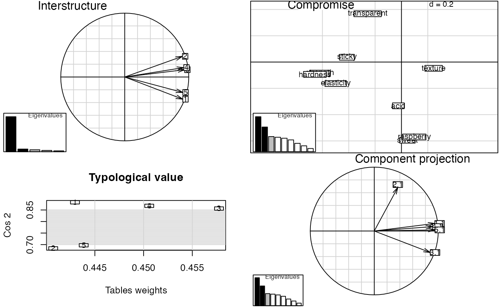

Collection of unsupervised multiblock methods:
SCA - Simultaneous Component Analysis (sca)
GCA - Generalized Canonical Analysis (gca)
GPA - Generalized Procrustes Analysis (gpa)
MFA - Multiple Factor Analysis (mfa)
PCA-GCA (pcagca)
DISCO - Distinctive and Common Components with SCA (disco)
HPCA - Hierarchical Principal component analysis (hpca)
MCOA - Multiple Co-Inertia Analysis (mcoa)
JIVE - Joint and Individual Variation Explained (jive)
STATIS - Structuration des Tableaux à Trois Indices de la Statistique (statis)
HOGSVD - Higher Order Generalized SVD (hogsvd)
Original documentation of STATIS: statis. JIVE, STATIS and HOGSVD assume variable linked matrices/data.frames, while SCA handles both links.
Overviews of available methods, multiblock, and methods organised by main structure: basic, unsupervised, asca, supervised and complex.
# Object linked data data(potato) potList <- as.list(potato[c(1,2,9)]) pot.sca <- sca(potList) # Variable linked data data(candies) candyList <- lapply(1:nlevels(candies$candy),function(x)candies$assessment[candies$candy==x,]) can.statis <- statis(candyList) plot(can.statis$statis)